3.2.2 Instalación y configuración de FreeRADIUS como AAA Server
1. Instalación
En primer lugar, hay que instalar FreeRADIUS y las utilidades necesarias para la integración con LDAP.
root@radius-openldap:/#apt install freeradius freeradius-ldap freeradius-utils
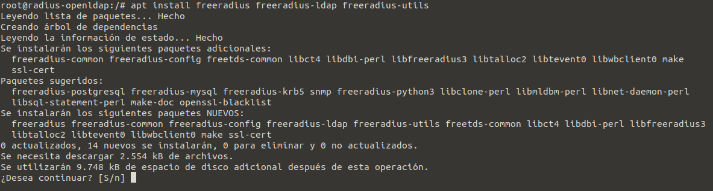
Figura 1. Instalación de freeradius y paquetes para integración con LDAP.
2. Configuración
Una vez se han instalado los paquetes, hay que comenzar con la configuración que se describe en los siguientes puntos.
1. Agregar los clientes radius
En primer lugar, se agregan los clientes radius como un controlador inalámbrico o punto de acceso al archivo /etc/freeradius/3.0/clients.conf. En este escenario, el cliente radius es un router TP-LINK configurado como punto de acceso con ip estática y que es 192.168.0.250. Hay que establecer el secreto compartido que más adelante, habrá que configurar en el Punto de Acceso.
root@radius-openldap:/#nano /etc/freeradius/3.0/clients.conf
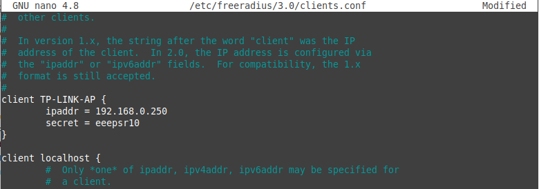
Figura 2. Cliente radius añadido en el fichero.
2. Configurar el protocolo de autenticación a utilizar
En este punto, hay que decidir qué protocolo se va a utilizar y que sea compatible con el método que utiliza LDAP para guardar las contraseñas en entornos GNU/Linux.
Si se accede al artículo Protocol and Password Compatibility se puede observar que hay tres protocolos compatibles. Para este escenario, el protocolo EAP-GTC por su seguridad y amplia compatibilidad sería un buen candidato.
Pero para este caso de ejemplo, se van a configurar diferentes mecanismos de autenticación: EAP-GTC, PEAP, TLS y LDAP, y de este manera, se abre el abanico de utilidad de este sistema.
Para comenzar con la configuración, hay que acceder al fichero de configuración del módulo EAP que se encuentra en /etc/freeradius/3.0/mods-available.
root@radius-openldap:/#nano /etc/freeradius/3.0/mods-available/eap
| Pincha sobre la imagen para acceder al fichero eap con los parámetros a configurar. |
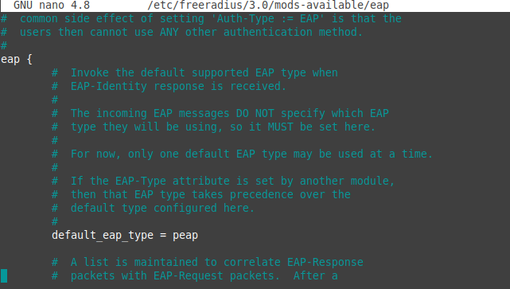
Figura 3. Configuración del módulo eap.
3. Integrar FreeRADIUS con LDAP (para la Authenticación)
En primer lugar, hay que editar el módulo LDAP de Radius ubicado en/etc/freeradius/3.0/mods-available/ldap con los detalles del servidor LDAP y a continuación, hay que habilitar el módulo.
root@radius-openldap:/#nano /etc/freeradius/3.0/mods-available/ldap
| Pincha sobre la imagen para acceder al fichero ldap con los parámetros a configurar. |
Una vez se ha guardado el fichero, hay que habilitar el módulo. Para ello, hay que crear un enlace simbólico al fichero en el directorio mods-enabled que es donde se encuentran los módulos habilitados (son enlaces simbólicos a ficheros). Los comandos son los siguientes:
root@radius-openldap:/#cd /etc/freeradius/3.0/mods-enabled/
root@radius-openldap:/#ln -s ../mods-available/ldap .
4. Comprobar el sitio default
A partir de la versión 2 de freeradius es posible crear diferentes servidores virtuales, de una forma muy similar a como se crean apache. En al directorio sites-available se encuentran los archivos de configuración de cada uno de los servidores virtuales que vayan a crear, y por supuesto, cada uno de estos servidores podría tener una configuración diferente.
En este directorio existe un fichero que define un servidor preconfigurado: el fichero default.
Si se quiere crear un servidor virtual específico y no utilizar el default, hay que crear un nuevo fichero en sites-available, ejemplo ciber-local, con el contenido del fichero default y hacer los cambios necesarios según necesidades. Una vez se tiene el fichero, hay que crear un enlace simbólico del fichero en /etc/freeradius/3.0./sites-enabled.
Ahora hay que comprobar que el módulo ldap está incluido en la sección authorize del sitio default que se encuentra en /etc/freeradius/3.0/sites-available. Si no está presente, hay que incluirlo, es decir, añadir -ldap. Además, hay que añadir el siguiente contenido para permitir la autenticación LDAP:
Auth-Type LDAP {
ldap
}
root@radius-openldap:/#nano /etc/freeradius/3.0/sites-available/default
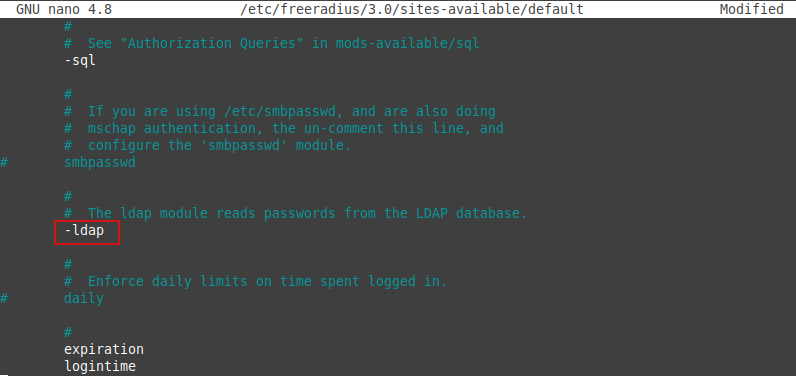
Figura 4. Configuración del módulo ldap en el sitio default.
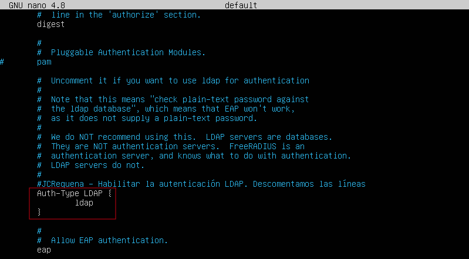
Figura 5. Configuración de la la autenticación LDA en el sitio default.
Por último, hay que comprobar que en la sección authorize de inner-tunnel que se encuentra en/etc/freeradius/3.0/sites-available. Si no está presente, hay que incluirlo, es decir, añadir -ldap.
root@radius-openldap:/#nano /etc/freeradius/3.0/sites-available/inner-tunnel
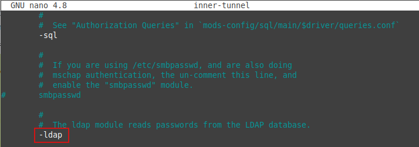
Figura 6. Configuración de inner-tunnel.
5. Restricción del acceso a grupos LDAP específicos (para autorización)
Una vez llegado a este punto, hay que especificar en el fichero users que está en /etc/freeradius/3.0/ aquellos usuarios a los que interesa que se puedan autenticar por medio del punto de acceso. Para este escenario, los usuarios miembros del grupo GGProgramacion podrán autenticarse en el servidor radios por medio del punto de acceso.
Para configurar esta política, hay que añadir al final del fichero users lo siguiente:
DEFAULT Ldap-Group == "cn=GGProgramacion,ou=grupos,ou=depInformatica,dc=ciber,dc=local"
Reply-Message := "Bienvenid@, %{User-Name}"
DEFAULT Auth-Type := Reject
Reply-Message = "¡No tienes permiso para acceder a la WLAN!"
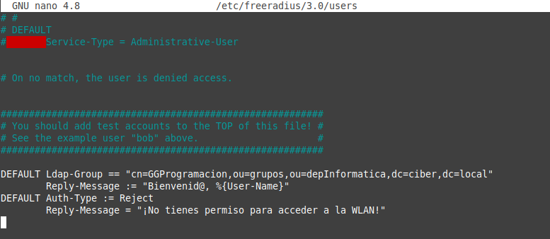
Figura 7. Configuración del fichero users.
Como se puede apreciar en la sección anterior, se ha implementado una respuesta para la autenticación con y sin éxito.
5. Testing de la conectvidad LDAP en local
Antes de comenzar las pruebas, hay que asegurarse que todos los puertos necesarios para la comunicación entre el servidor FreeRADIUS y el servidor OpenLDAP estén abiertos.
Una vez realizadas las pruebas iniciales, se comienza con la prueba inicial en local. En primer lugar, hay que detener el servicio FreeRADIUS y después se reinicia manualmente en modo depuración:
root@radius-openldap:/#systemctl stop freeradius.service
root@radius-openldap:/#freeradius -X
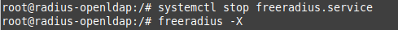
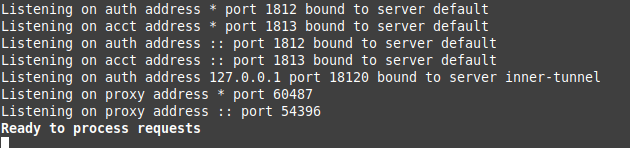
Figura 8. Ejecución de freeradius en modo debugger.
Una vez se ejecuta freeradius en modo debugger, se puede consultar la salida para comprobar que las configuraciones realizadas son correctas y el servicio se inicia sin errores.
A continuación, se inicia el servicio y se consulta el estado del mismo:
root@radius-openldap:/#systemctl start freeradius.service
root@radius-openldap:/#systemctl status freeradius.service
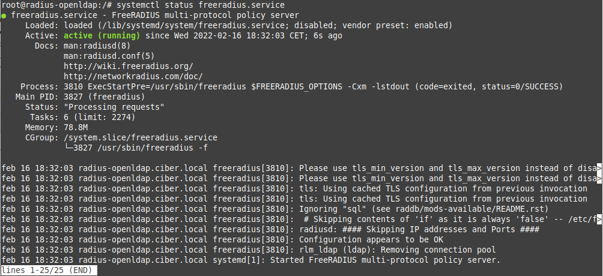
Figura 9. Listar el estado del servicio freeradius.
Una vez se ha comprobado que el servicio está ejecutándose de manera exitosa, hay que realizar una prueba inicial con el cliente local. Para ello, se tiene el comando radtest que viene en el paquete freeradius-utils que se instaló en un apartado anterior.
Se van a realizar 2 pruebas, una con un usuario del grupo GGProgramacion que tiene habilitado el acceso y otra con un usuario del grupo GGRedes que no tiene habilitado el acceso.
En primer lugar se prueba el usuario user01 que es miembro del grupo GGProgramacion.
root@radius-openldap:/#radtest user01 Camina-100 localhost 10 testing123
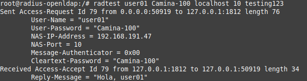
Figura 10. Prueba de autenticación del usuario user01.
A continuación, se prueba el usuario user03 que es miembro del grupo GGRedes.
root@radius-openldap:/#radtest user03 Camina-100 localhost 10 testing123
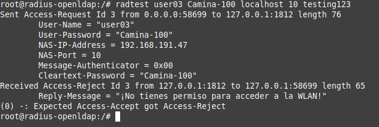
Figura 11. Prueba de autenticación del usuario user03.
Como se puede observar en la figura superior, el usuario no ha podido autenticarse como era de esperar.
Para finalizar, se accede al fichero de log para constatar que se han resgistrado los accesos existosos y erróneos.
root@radius-openldap:/#tail -15 /var/log/freeradius/radius.log
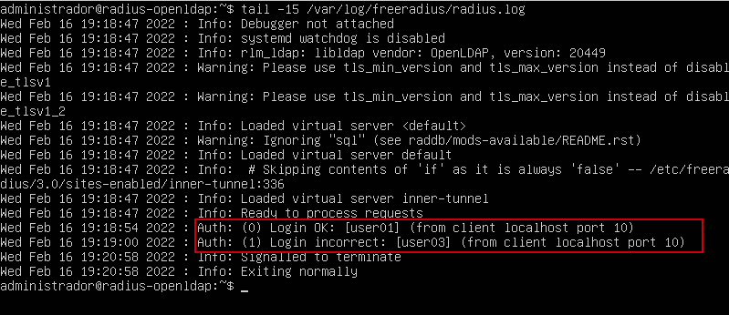
Figura 12. Accounting del servicio radius.
Obra publicada con Licencia Creative Commons Reconocimiento No comercial Compartir igual 4.0